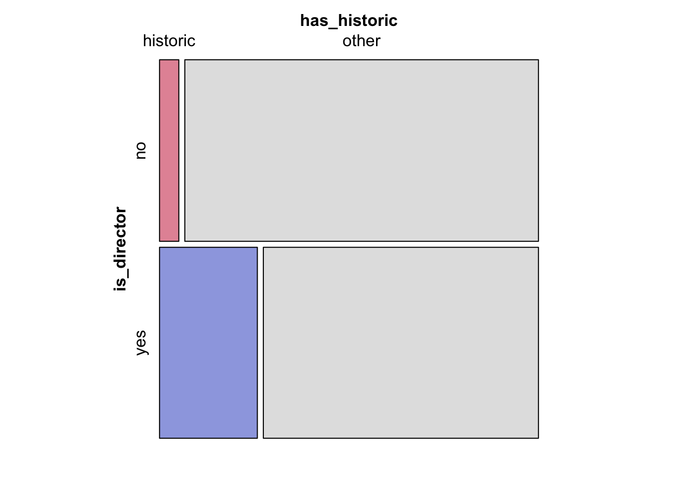
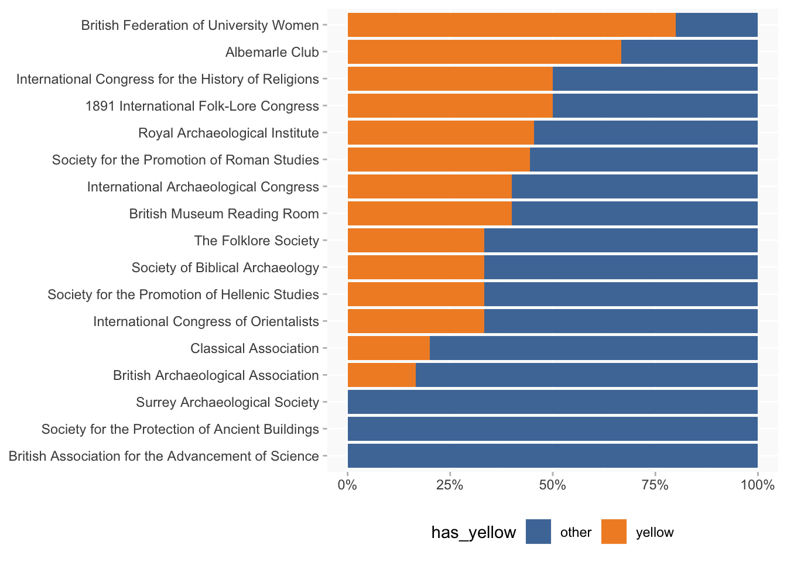
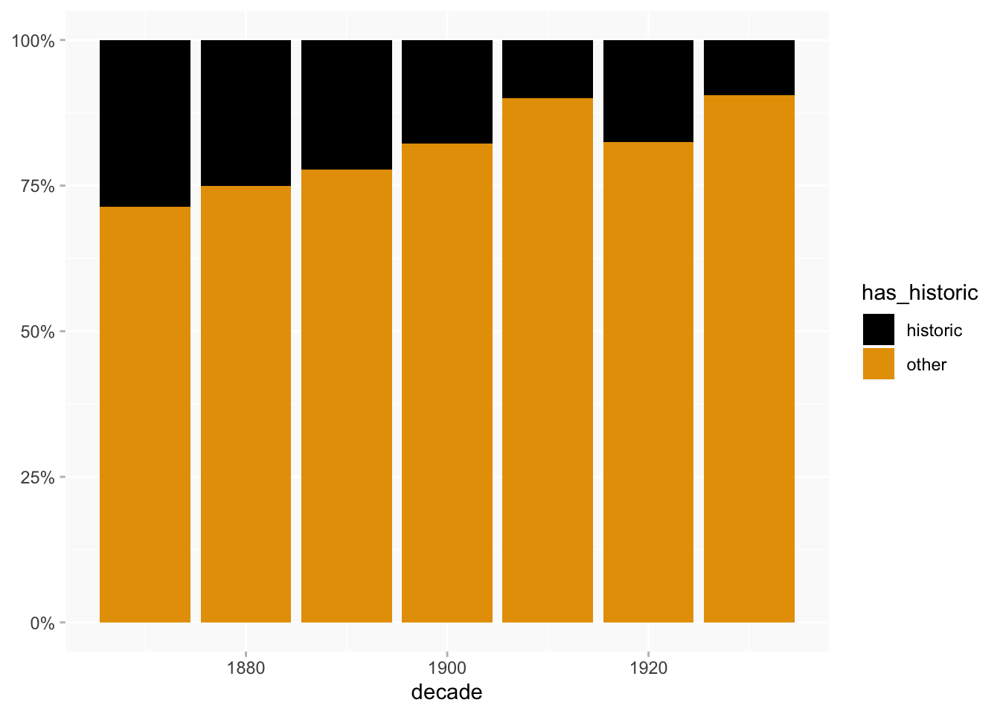

Finding Proxies
class
Possible ways to explore social class in BN
Notes
Various different queries have been used in this post.
Experiments with three different proxies:
- at some point resided at a historic house
- in the 1890s lived at an address coded yellow in Charles Booth’s poverty maps of London
- recorded in reference works concerning the peerage/landed gentry
Proxies
historic house:
- the reference group for comparisons = all women who have at least one
resided atstatement - “historic” - at least one address is an
instance ofhistoric house
(caveats: what is the definition of “historic house” and how was it applied?)
Booth yellow:
- group = women with
resided atstatements whose addresses have been located in the Booth maps (so this is a small subset of the resided at group above) - “yellow” - at least one address colour coded yellow (wealthiest) in Booth
(caveats: this is a small group covering a limited geographical and chronological range)
landed/peerage reference:
reference group = all women who have at least 10 statements and at least one
specific reference information(P91) reference (for any property)“landed” - at least one reference in one of the books relating to peerage/landed gentry etc
- Debrett’s Peerage, Baronetage, Knightage and Companionage (Q3429)
- The Peerage and Baronetage of the British Empire (Q3493)
- The Peerage, Baronetage, and Knightage of Great Britain and Ireland (Dod’s) (Q3430)
- A Genealogical and Heraldic History of the Peerage and Baronetage (Q4541)
- A Genealogical and Heraldic History of the Landed Gentry of Great Britain and Ireland (Q3426)
- Kelly’s Handbook to the Titled, Landed and Official Classes (Q3425)
- Armorial Families (Q3428)
(caveats: this is usefully different from the data above that’s based on residences, but it’s not clear to me if mentions in the peerage reference books were always entered as references, if the information had already been collected from another source. If recording wasn’t comprehensive then this will not be reliable.)
General caveat: this is a basic yes or no which flattens all sort of potential distinctions (such as people who might have only briefly lived in a posh house).
overall percentages for the reference groups
Historic house
(716 women with at least one residence)
Booth yellow
(58 women)
Landed/peerage references
(544 women with at least one reference and 10 statements)
Comparisons
To be useful for comparison, information needs to be of a type that can be turned into a yes/no or a hierarchy, and to be something that was reasonably consistently recorded. Here I’m experimenting with:
- membership of RAI
- elected FSAs
- excavations hierarchy (people who directed excavations vs people who were only recorded as members)
- memberships more generally
Other possible categories: women who did/didn’t go to university, or to specific colleges; possibly other types of engagement with organisations, like committee service.
Mosaic charts (detailed explanation) are used to compare proportions. They’re useful because they also indicate relative size of groups, and they highlight statistical significance. If the computation finds a difference is statistically significant, the rectangles are coloured: shades of red for negative association, blue for positive association. Grey indicates that any differences are statistically insignificant. (Statistical significance isn’t everything, but it is a warning against making too much of small variations.)
The charts are visualisations of “contingency tables” which look like this:
has_historic
is_rai historic other
no 87 332
yes 44 253RAI membership
- historic house: women with a historic house residence are slightly less likely than others to be RAI members.
- Booth: people with yellow residences are slightly more likely than others to be RAI members.
Landed/peerage references: no visible difference.
FSAs
Historic house: still grey…
I haven’t done the landed/peerage references chart because only one FSA has one.
Excavation directors
Again I haven’t done Booth here because the number of pre-WW1 excavations is so small. But I can easily add it if you want.
Historic house: finally, an association between a proxy and a higher status role.

Landed/peerage reference: very very slight positive association with directors.
Societies and clubs members
It seems that RAI membership is less posh than was expected. But how does its membership compare to other organisations?
(Charts restricted to organisations that have at least 10 members.)
Historic house
RAI is ranked 12 out of 20 (and just under 15% of RAI members=historic).
Booth
RAI is ranked higher here, at 5 of 15 (and 45% members=yellow).

Landed reference.
RAI is again in the top five.
Change over time?
Membership data is mostly dated (even if often only point in time data), so it’s possible to look at whether there are any chronological trends in membership. Here I’m using the earliest recorded date per person per organisation and working on the assumption that’s at least a rough reflection of when people joined (and grouping by decade).
(I’m ignoring dates associated with the proxies.)
RAI members
not a perfectly consistent pattern but clear that a higher proportion of 19th-century members had historic house connections than those with 20th-century dates.

FSAs
no real pattern visible here. Having said that, the 1940s have the largest numbers by some distance, accounting for about half of the elections, so it’s interesting that the % historic is so much lower than the two decades either side. (Also NB: the 1950s only cover 1950-52 and there are only 7 elections in the 1920s.)
I haven’t done the dates for excavation directors because the query would be more complex; if you think it’d be useful I can add it.